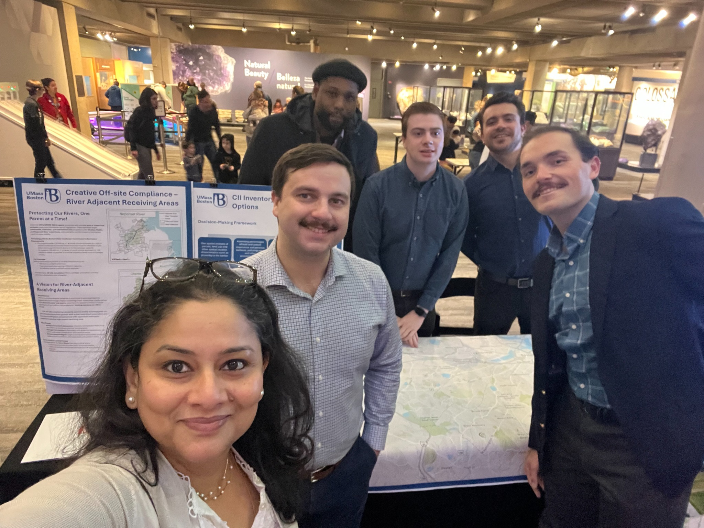

Housing policy and wealth-building
Affordable housing, LIHTC, inclusionary housing, low-income homeownership, nonprofit intermediaries, and community development finance.
Balachandran Urban Systems Lab
I am an Assistant Professor of Urban Planning and Community Development at the University of Massachusetts Boston. My work examines how housing, transportation, environmental risk, public finance, and community institutions shape access to opportunity for marginalized communities.
This website is a living portfolio for my scholarship, planning practice, public-facing reports, teaching, and emerging work on spatial capacity loss and metropolitan adaptation.

Research · practice · teaching
Across research, teaching, and service, my work advances engaged scholarship. Students participate as co-investigators, agencies and community organizations help shape research questions, and outputs range from journal articles to policy reports, planning tools, public presentations, and community-facing deliverables.
Explore current projectsMy work combines spatial analysis, institutional analysis, mixed methods, community engagement, and public finance to understand uneven access to opportunity.
Affordable housing, LIHTC, inclusionary housing, low-income homeownership, nonprofit intermediaries, and community development finance.
Mobility systems for older adults, people with disabilities, transportation-disadvantaged riders, and community-based transportation networks.
How hazards, infrastructure stress, fiscal dependence, and uneven development reshape municipal futures and regional interdependence.
This site is designed to grow with new papers, public reports, project pages, maps, teaching modules, dashboards, student work, and practitioner resources.